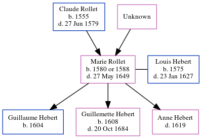

Marie Hebert (née Rollet) 1580 - 1649
[ Home ] | [ Calendar ] | [ Surnames Index ] | [ Census Index ] | [ Family History ]The child of Claude Rollet and Unknown, Marie Rollet, the 11 times great-grandmother of Michele Copp (née Phillips), was born in Paris, Ile-de-France, France on Jan 1, 15801 and married Louis Hebert (with whom she had 3 children: Guillaume, Guillemette and Anne) in Paris in Paris in Jul 16021.
She died on May 27, 1649 in Québec, , Quebec, Canada.
Parents
- Claude was born in 1555
Children
- Guillaume was born in 1604
- Guillemette was born in 1608
Citations
- U.S. and International Marriage Records, 1560-1900 Online publication - Provo, UT, USA: The Generations Network, Inc., 2004.Original data - This unique collection of records was extracted from a variety of sources including family group sheets and electronic databases. Originally, the information was deriv
Family Tree
Generated by ged2site. Last updated on Jun 6, 2024